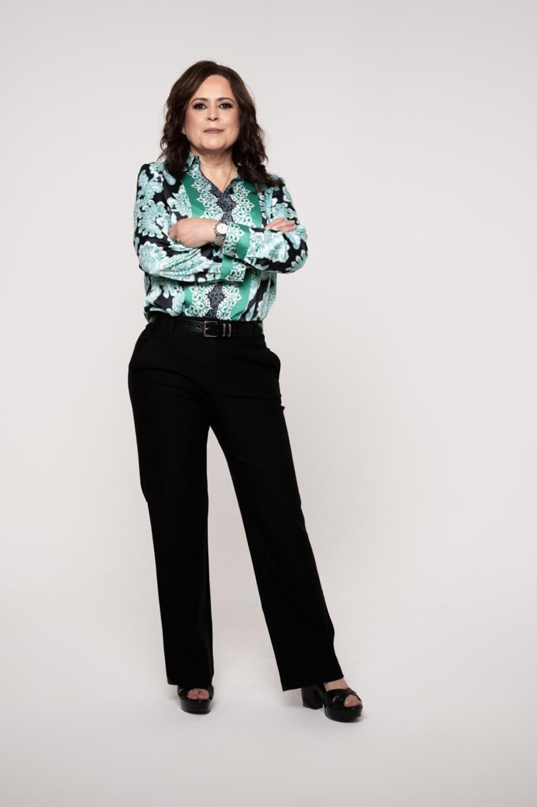
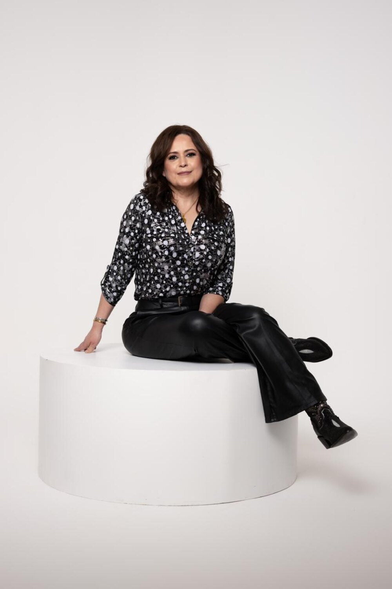

Regulación del sistema nervioso
Ayudamos a tu cuerpo a salir del estado de alerta constante y a recuperar su capacidad natural de calma, descanso y toma de decisiones.
El arte del bienestar profundo y la longevidad. Un espacio para detenerte, respirar y regular tu sistema nervioso — para volver a sentirte en equilibrio.

Millones de personas sobreviven cada día; muy pocas se sienten verdaderamente vivas.
El estrés, las pérdidas, el agotamiento y el ritmo de la vida moderna alteran el equilibrio del cuerpo y del sistema nervioso. Kalira nace para ofrecer un espacio donde puedas detenerte, respirar y reencontrarte contigo mismo — recuperando claridad, descanso, calma y vitalidad.
No somos un spa ni una clínica convencional. Integramos herramientas que actúan sobre el cuerpo, el cerebro y las emociones, entendidos como un solo sistema.
Ayudamos a tu cuerpo a salir del estado de alerta constante y a recuperar su capacidad natural de calma, descanso y toma de decisiones.
Terapias orientadas a reducir la inflamación, apoyar la función inmunológica y favorecer los procesos naturales de regeneración del organismo.
Equipos de diagnóstico y terapia de nivel internacional, integrados en una experiencia diseñada con calma, precisión y detalle.

Cada visita es una experiencia guiada de aproximadamente 90 a 120 minutos. Desde que entras, todo está pensado para transmitir calma: se toma tu información, se realiza un diagnóstico y se diseña un recorrido a tu medida a través de nuestras terapias.

Kalira nace de una convicción personal: que las personas merecen un lugar donde recuperar su equilibrio, su descanso y su vitalidad. Detrás de cada detalle hay una visión de bienestar cuidada, humana y profesional.
No tratamos síntomas aislados. Acompañamos a cada persona a volver a sí misma cuando su cuerpo, su descanso y sus emociones vuelven a estar en armonía.Kalira · Transformando desde el bienestar
Escríbenos y te ayudamos a dar el primer paso hacia un cuerpo más descansado y una vida más plena.